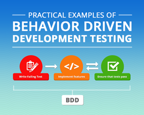
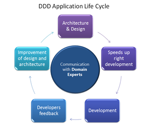

Käitumisel põhinev arendus (BDD) on tarkvaraarenduse meetod, mis on välja arenenud testimisel põhinevast arendusest. Käitumisel põhinev arendus kombineerib testimisel põhineva arenduse üldiseid tehnikaid ja põhimõtted. Selle eesmärk on pakkuda arendustiimile ja juhtivtiimile jagatud tööriista tarkvara arendamisel. Käitumisel põhineva arenduse osana kasutatakse tavalise lause konstruktsiooni, mis väljendab käitumist või tulemust.
Käitumisel põhinev arendus on testimisel põhineva arenduse laiendus . Selleks kasutatakse lihtsat valdkonnaspetsiifilist keelt, mis omakorda genereerib tavalised laused testideks.

BDD-kesksed küsimused on järgnevad:
• Kust alustada testimist?
• Mida testida ja mida mitte?
• Kui palju testida ühe korraga?
• Kuidas aru saada, miks test ebaõnnestub?
Paljud inimesed on aastate jooksul BDD raamistikku arendanud, lõpuks kujunes sellest suhtlemis- ja koostööraamistik tarkvaraprojektis arendajatele, testijatele ja tehnilise taustata inimestele (nt kliendid, äripartnerid).
Käitumisel põhinev testimine kasutab käitumise väljendamiseks poolformaalset vormingut, mis on võetud kasutusloost (ingl user story). BDD eeldab, et analüütikud ja arendajad teevad koostööd. Nende ülesanne on kirjutada käitumisel põhinevad laused vastavasse dokumenti.
Struktuur:
Pealkiri: Omadus peaks olema selge ja kõigile arusaadav.
Sündmustik: Lühike, sissejuhatav osa.
• Kes on loo põhitegelane (klient, kasutaja, administraator jne)?
• Mida ta tahab teha?
• Miks ta seda teha tahab?
Stsenaarium:
• Kirjeldus stsenaariumist
• Vajaliku konditsiooni spetsifikatsioon stsenaariumi alguses.
• Stsenaariumi algatav tegevus.
• Oodatav tulemus.
Näide BDD-st:
>@tag_sisse_logimine
Scenario Outline: Kontrolli, et saad rakendusse sisse logida
Given Ma käivitan http://rakendus.com lehe
When Ma täidan „Kasutajanimi“ väärtusega „“
And Ma täidan „Parool“ väärtusega „“
Then Ma satun esilehele
Disainipõhine lähenemisviis on rakenduste, veebisaitide ja turgude arendamisel parim lähenemisviis. See algab põhjaliku ärianalüüsi ja disainiga, mis hõlmab kõiki peamisi samme projekti lõpuleviimise suunas. Ärianalüüs ja -disain, kui seda juba alguses õigesti teha, võib aidata määrata suunda, vähendada oluliselt arenduskulusid ja luua aluse sujuvale kasutajakogemusele.
Enne arendustöö algust istuvad meie ärianalüütikud, UI/UX disainerid, projektijuht ja klient maha, et arutada ja vastata mõnele olulisele küsimusele:
• Kuidas saab toode turul silma paista?
• Mis on toote põhiväärtus ja kuidas saame selle missiooni parimal võimalikul viisil edasi anda?
• Millised funktsioonid on hädavajalikud?
• Kuidas iga funktsioon kasutajakogemust mõjutab?
Need on vaid mõned arutelupunktid ärianalüüsi protsessis, mis käivitab projekti teekonna. Järgmine samm on teha kliendi isikuuuringuid, luua kasutajavooge ja koostada üksikasjalikud klikitavad prototüübid. See osa tööst mõjutab seda, kuidas kliendid lõpptulemust ette kujutavad. Samuti toob see esile, mida on vaja toote edukaks toimimiseks tegelikult teha.
Kui oleme nõuded kokku kogunud ja kõik ideed lauale pandud, on aeg alata UX-i disainitöö. UX-i disain on põhimõtteliselt kõige keerukamate protsesside pakkimine lihtsasse, loogilisse rakenduse prototüübisse. UX-i disain mõjutab kasutajakogemust kõige enam, kuna see testib rakenduse loogikat ja läbib selle kõige olulisemad kasutajastsenaariumid. Näiteks registreerimis- ja autoriseerimisekraanid, avalehe ekraani välimus, tellimuste vormistamise ja tasumise ekraanid jne.
Prototüüpide loomine ning iga ekraani ja kasutaja toimingu läbimõtlemine võimaldab tuvastada ebakõlasid ja lõkse algstaadiumis. Tegelikult on see aja- ja ressursitõhususe seisukohalt ülioluline tegur. Probleemide märkamine hiljem arendusjärgus tähendab, et nende ebakõlade parandamiseks kulub rohkem raha ja aega.
Domeenipõhine disain (DDD) on tarkvara kujundamise lähenemisviis , mis keskendub tarkvara modelleerimisele, et sobitada domeeni vastavalt selle domeeni ekspertide sisendile.
Objektorienteeritud programmeerimise puhul tähendab see seda, et tarkvarakoodi struktuur ja keel (klassinimed, klassimeetodid , klassimuutujad ) peaksid ühtima ärivaldkonnaga . Näiteks kui tarkvara töötleb laenutaotlusi, võivad sellel olla sellised klassid nagu LoanApplication ja Customer ning sellised meetodid nagu AcceptOffer ja Draw.

Domeenipõhine disain põhineb järgmistel eesmärkidel:
• projekti põhifookuse asetamine põhidomeenile ja domeeniloogikale;
• keerukate kujunduste rajamine domeeni mudelile;
• loova koostöö algatamine tehniliste ja domeeniekspertide vahel, et iteratiivselt viimistleda kontseptuaalset mudelit, mis käsitleb konkreetseid domeeniprobleeme.
Domeenipõhise disaini kriitika väidab, et arendajad peavad tavaliselt rakendama suurt isolatsiooni ja kapseldamist, et säilitada mudel puhta ja kasuliku konstruktsioonina. Kuigi domeenipõhine disain pakub selliseid eeliseid nagu hooldatavus, soovitab Microsoft seda ainult keeruliste domeenide jaoks, kus mudel pakub selgeid eeliseid domeeni ühise arusaama kujundamisel.
Selle termini võttis kasutusele Eric Evans oma 2003. aastal ilmunud samanimelises raamatus.
Disainitud turvalisus keskendub pigem küberturvalisuse rikkumise ennetamisele kui probleemi lahendamisele ja süsteemide taastamisele pärast seda, kui ettevõtet on tabanud küberturvalisuse rikkumine.
Disainturvalisus, mida tuntakse ka kui disainilahendusega turvalist, tähendab, et ettevõtted mõtlevad küberturvalisusele juba projekti alguses. Disainipõhine turvalisus tähendab, et tarkvarainsenerid on kavandanud tarkvara juba algusest peale turvalisena, et vähendada ettevõtte infoturvet ohustavate vigade tõenäosust.
Tõhus lähenemine küberturvalisuse riskijuhtimisele nõuab täielikku küberturvalisuse elutsükli perspektiivi. Turvalisuse elutsükkel sarnaneb tootearenduse elutsükliga, kuna see algab ideest ja lõpeb tarnimise ja toega. Disainitud turvalisus tagab, et organisatsioon haldab, jälgib ja hoiab pidevalt küberturvalisuse riskide juhtimist ja juhtimist.
Kuigi disainipõhine turvalisus süsteemi kujundamisel ei ole uus, on pilv muutnud tarkvaraarendajate jaoks disainipõhise turvalisuse teostamise lihtsamaks. Tegelikult reklaamib Amazon Web Services (AWS) seda lähenemist aktiivselt ja vormistab seda pilve klientide jaoks.
Disainipõhine turvalisus on tarkvara ja riistvara arendamiseks oluline, kuna süsteemi arenedes muutub turvalisuse lisamine keerulisemaks. Lisaks võib olemasolevate küberturvalisuse haavatavustega tegelemine ja nende reaalajas lappimine olla keeruline. Ja see ei ole kunagi nii tõhus kui süsteemide kavandamine algusest peale võimalikult turvaliseks.
Seetõttu, kuna asjade internet laieneb ja tööstuslikus asjade Internetis levib rohkem ühendatud seadmeid, on ülioluline, et ettevõtted kehtestaksid tõhusama küberturvalisuse lähenemisviisi, näiteks kavandatud turvalisuse, tugevdaksid turvalisust.
Testimisel põhinev arendus (inglise keeles test-driven development, lühend TDD) on tarkvaraarenduse meetod, kus testid kirjutatakse enne tarkvara ennast.
Arendusprotsess koosneb lühikestest iteratsioonidest, kus esmalt kirjutatakse ebaõnnestuv test ning seejärel minimaalne kood, et see test läbi läheks. Selline arendus tagab olukorra, kus kogu kood on alati testitud. Sellisel viisil kirjutatud koodi on kergem refaktoreerida ning testid aitavad ka programmi eeldatavat käitumist dokumenteerida.
Testimisel põhinevat arendust rakendatakse ka olemasoleva koodi täiustamisel ja silumisel.
Testimisel põhineva arenduse loojaks või taasavastajaks peetakse USA tarkvaraarendajat Kent Becki. Ta väidab, et testimisel põhinev arendus aitab luua lihtsa disainiga tarkvara ja tõstab selle usaldusväärsust. Testimisel põhinev arendus on muutunud populaarsemaks ning selle vastu tuntakse üha enam huvi ka suurtes ettevõtetes.
Testimisel põhineva arenduse tsükkel:
1. Testi kirjutamine
Testimisel põhinev arendus algab uue testi kirjutamisega. Test peab defineerima ühe funktsiooni või mõnda funktsiooni täiustama. Testi kirjutajal peab olema selge arusaam nõuetest testitavale funktsionaalsusele. Testimisel põhinev arendus sunnib seega arendajat tutvuma rakenduse nõudmistega enne koodi kirjutamist.
2. Kõikide testide käitamine
Selle sammu eesmärk on veenduda, et testid töötavad nii, nagu ette nähtud. Oluline on, et lisatud uus test ei lähe läbi. See näitab, et testitavat funktsiooni veel ei eksisteeri ning seega on vaja koodi kirjutades see implementeerida. Arendaja saab olla kindel, et test ebaõnnestus eeldataval põhjusel. Lisaks välistab see samm võimaluse, et uus test läheb alati läbi.
3. Koodi kirjutamine
Eesmärk on kirjutada kood nii, et test läbi läheks. Kirjutatav kood ei pea olema veel lõplik ja rahuldav. Seda koodi täiustatakse viienda sammu juures. Testi õnnestumine on selles sammus kirjutatava koodi ainuke eesmärk. See kood ei tohi teha midagi muud.
4. Kõikide testide käitamine
Kui kõik testid koos uue testiga läbi lähevad, võib arendaja kindel olla, et kirjutatud kood vastab testitavatele nõuetele ega muuda olemasolevat koodi. Kui kõik testid läbi ei lähe, peab muutma lisatud koodi seni, kuni testid jälle läbi lähevad.
5. Refaktoreerimine
Kuna nüüd on olemas test, mis kontrollib õiget käitumist, saab pärast koodi muutmist veenduda, et kogu kood endiselt töötab. Uus kood tuleb nüüd korrastada, et parandada koodi loetavust ja hallatavust.
Testimisel põhinev arendus koosneb selliste tsüklite kordamisest. Igas sammus tehtud muudatuste hulk peaks olema väike, koosnedes 1–10 muudatusest. Sellisel juhul on testide läbikukkumise korral arendajal kerge vigu leida ja parandada. Väliseid teeke kasutades peab veenduma, et testi ei testiks teegi funktsionaalsust, välja arvatud juhul, kui teegi usaldusväärsus on kaheldav.
Analoogselt testipõhisele arendusele hõlmab ATDD (Acceptance Test Driven Development) erinevate vaatenurkadega (klient, arendus, testimine) meeskonnaliikmeid, kes teevad koostööd, et kirjutada vastuvõtuteste enne vastava funktsionaalsuse juurutamist. Nõustamistesti genereerimiseks toimuvaid koostöövestlusi nimetatakse sageli kolmeks sõbraks, mis esindavad kolme vaatenurka: klient (millist probleemi me püüame lahendada?), arendus (kuidas saaksime selle probleemi lahendada?) ja testimine ( kuidas oleks…).
Need aktsepteerimistestid esindavad kasutaja vaatenurka ja toimivad nõuetena, mis kirjeldavad, kuidas süsteem toimib, ning on ka viis kontrollida, kas süsteem toimib ettenähtud viisil. Mõnel juhul automatiseerib meeskond vastuvõtutestid.
Pidev testipõhine arendus (CTDD) on tarkvaraarenduse praktika, mis laiendab testipõhist arendust (TDD) taustal automaatse testimise abil, mida mõnikord nimetatakse pidevaks testimiseks.
CTDD-s kirjutab arendaja esmalt testi, kuid pole sunnitud teste käsitsi täitma. Teste käivitab automaatselt taustal töötav pidev testimistööriist. See meetod võib potentsiaalselt vähendada käsitsi testimisest tulenevat ajaraiskamist, kuna arendaja ei pea testi alustama pärast tavapärase TDD praktika iga etappi: pärast (esialgu ebaõnnestunud) testi kirjutamist, pärast minimaalse koguse koodi loomist. testi läbimiseks ja pärast koodi ümbertöötamist.
Näidiste järgi spetsifikatsioon on koostöine lähenemisviis tarkvaratoodete nõuete ja ettevõtlusele suunatud funktsionaalsete testide määratlemisel, mis põhineb nõuete tabamisel ja illustreerimisel, kasutades abstraktsete väidete asemel realistlikke näiteid.
Seda rakendatakse agiilsete tarkvaraarendusmeetodite, eriti käitumispõhise arenduse kontekstis. See lähenemisviis on eriti edukas nõuete ja funktsionaalsete testide haldamisel suuremahulistes, olulise domeeni ja organisatsioonilise keerukusega projektide puhul.
Eelised:
Väga abstraktseid või uudseid uusi mõisteid võib olla raske mõista ilma konkreetsete näideteta. Näitepõhise täpsustamise eesmärk on luua täpne arusaam ja vähendada märkimisväärselt tarkvaraarenduse tagasisideahelaid, mille tulemuseks on vähem ümbertöötamist, kõrgem tootekvaliteet, tarkvaramuudatuste kiirem töötlemisaeg ja tarkvaraga seotud erinevate rollide tegevuste parem joondamine. arendustegevust, nagu testijad, analüütikud ja arendajad.
Andmepõhine tarkvaraarendus põhineb kindlatel mõõdikutel, nagu peamised jõudlusnäitajad (KPI) või eesmärgid ja võtmetulemused (OKR). Selged, objektiivsed ja üheselt mõistetavad mõõdikud julgustavad arendajate meeskondi mõtlema oma igapäevase töö pikaajalistele strateegilistele eesmärkidele ja iga projekti ärilisele väärtusele. Andmed võimaldavad neil meeskondadel ja üksikisikutel visualiseerida, kuidas nende töö aitab kaasa ettevõtte edule ja kuidas nad saavad toetada organisatsiooni selle oluliste eesmärkide saavutamisel.
Siinkohal on oluline märkida, et vaatamata sellele, et see keskendub kõvadele numbritele ja statistikale, sõltub andmepõhise arenduse edu inimestest. Mõõdikutel põhinev programm saab olla edukas ainult siis, kui üksikisikud ja meeskonnad mõistavad andmeid, nendega tegelevad ja on valmis neid pidevaks õppimiseks ja täiustamiseks kasutama.
Lisaks peavad ettevõtte visioon ja juhtimine olema kooskõlas KPI-de ja OKR-idega, mis on määratletud andmepõhise arendusprogrammi võimaldajatena. Tugevad tarkvaratehnika mõõdikud (projekti ja individuaalse kvaliteedi standardid ja etalonid) ning positiivsed käitumismõõdikud (mis juhib teie inimesi ja julgustab neid ellu viima?) võivad samuti aidata programmi edu saavutada.
Arvutustehnikas on andmetele orienteeritud disain programmide optimeerimise lähenemisviis, mis on ajendatud CPU vahemälu tõhusast kasutamisest, mida kasutatakse videomängude arendamisel. Lähenemisviis on keskenduda andmete paigutusele, eraldada ja sorteerida väljad vastavalt vajadusele ning mõelda andmete teisendustele. Pooldajate hulka kuuluvad Mike Acton, Scott Meyers ja Jonathan Blow.
Paralleelne massiiv (või massiivide struktuur) on andmetele orienteeritud disaini peamine näide. See vastandub objektorienteeritud disainidele tüüpiliste struktuuride massiiviga.
Need meetodid muutusid eriti populaarseks 2000. aastate keskel või lõpus seitsmenda põlvkonna videomängukonsoolide ajal, mis hõlmasid IBM PowerPC-põhiseid PlayStation 3 (PS3) ja Xbox 360 konsoole.